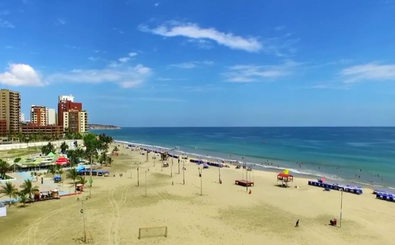

Playa y Ciudad
Playa El Murciélago
Ubicación: Zona urbana central (Sector Umiña).
Corazón turístico rodeado de hoteles como el Oro Verde. Sus aguas tranquilas y amplio malecón son perfectos para el relax y la vida nocturna.
Actividad: Natación, deportes de arena y turismo hotelero.